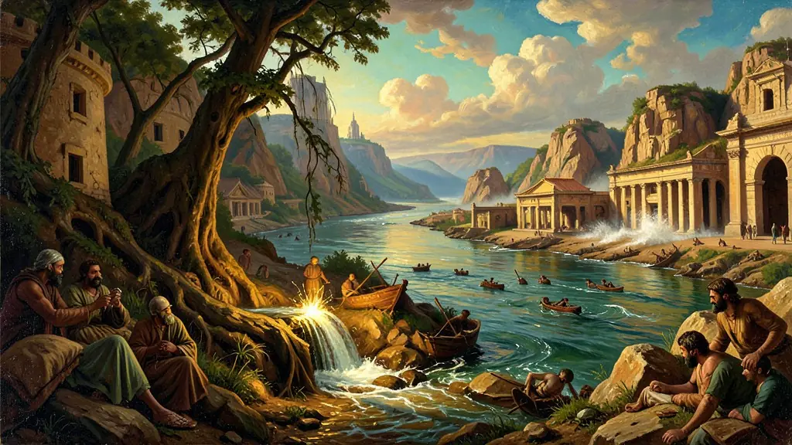
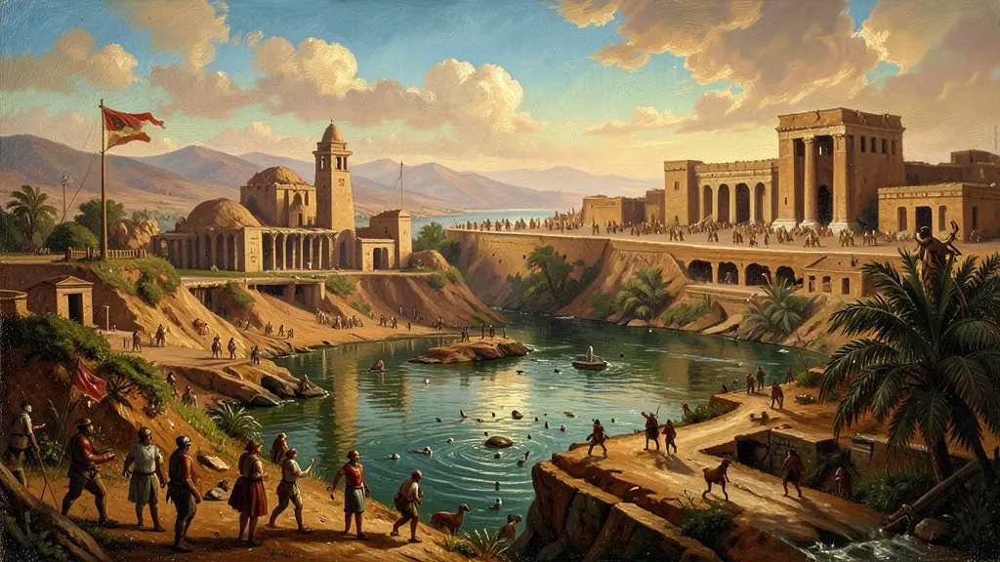
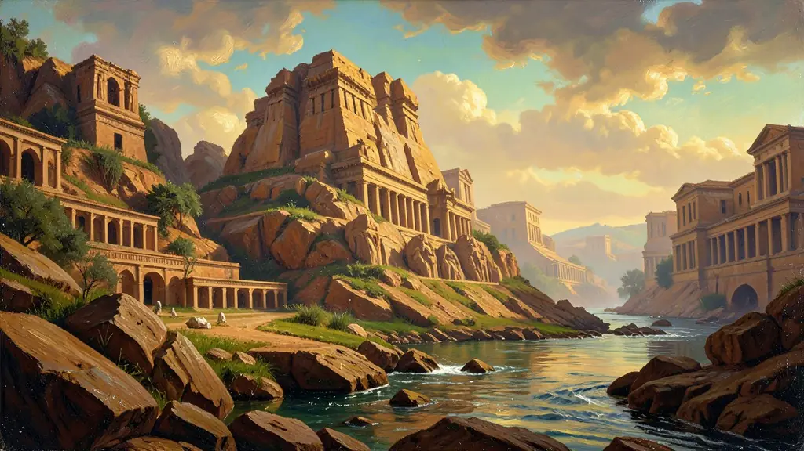

Capítulo 01
1. Civilizações Hidráulicas: A Gestão do Caos
Para viver no deserto, os homens precisavam de represas. A construção de obras gigantescas exigia milhares de braços e uma liderança forte para coordenar tudo. O Estado nasceu não apenas para cobrar impostos, mas para garantir que o rio irriguasse o trigo. Se o rio corresse livre, a civilização morreria. O controle da água era a fonte primordial do poder político.

Capítulo 02
2. Mesopotâmia: Terra de Impérios Guerreiros
Diferente do Egito isolado, a Mesopotâmia era uma rota de passagem. Os sumérios deram ao mundo a roda e a escrita. Depois vieram os babilônios que, sob o comando de Hamurábi, criaram o primeiro código de leis que organizava a família, a propriedade e o comércio. A lei visava impedir o caos, mas era profundamente desigual dependendo da classe social do infrator.

Capítulo 03
3. O Egito dos Faraós: A Eternidade em Pedra
O Faraó era o dono de todo o Egito — das pessoas, das terras e dos animais. Sua autoridade era absoluta e incontestável. Todo o trabalho do povo servia para sustentar o luxo da corte e para construir as pirâmides, que eram 'casas de eternidade'. A religião politeísta justificava a estrutura social, com o Faraó garantindo o equilíbrio (Maat) entre o céu e a terra.

Capítulo 04
4. Escribas: Os Donos da Informação
Saber ler e escrever era um poder sagrado. No Egito e na Suméria, os escribas formavam uma burocracia privilegiada que registrava colheitas, estoques de armas e impostos. Sem a escrita, o Estado não teria memória e não poderia cobrar o que era devido. A educação era rigidamente controlada para evitar que o conhecimento fugisse das mãos do governo.
Capítulo 05
5. O Modo de Produção Asiático
Nesse sistema, o Estado é o proprietário de tudo. Não havia propriedade privada da terra como conhecemos. A população trabalhava na agricultura em regime de servidão coletiva nas terras do governo para pagar impostos e era obrigada a prestar serviços em obras públicas (corveia real). Foi desse trabalho forçado que nasceram as pirâmides e as muralhas da Babilônia.
As chamadas 'Civilizações Hidráulicas' do Oriente Próximo, como o Egito e a Mesopotâmia, fundamentaram sua existência na gestão coletiva e estatal dos grandes rios. O Nilo, o Tigre e o Eufrates não eram apenas provedores de água, mas o centro organizador de toda a vida política e econômica. A necessidade de construir canais de irrigação e diques impulsionou a criação de estados centralizados e teocráticos, onde o governante era visto como um deus ou seu representante direto na terra.
O modo de produção asiático é o conceito-chave para entender essas sociedades. Nele, a terra pertencia nominalmente ao Estado, e os camponeses viviam em regime de servidão coletiva, entregando parte da produção e trabalhando em obras públicas monumentais como pirâmides e zigurates. Essa estrutura permitia uma estabilidade milenar, mas também uma rígida hierarquia social onde a mobilidade era praticamente inexistente, contrastando fortemente com os modelos de cidadania que surgiriam mais tarde no Ocidente.
No Egito Antigo, a religião e a escrita (hieroglífica) eram instrumentos de poder fundamentais. A vida após a morte não era apenas uma crença espiritual, mas um motor econômico que demandava vastos recursos para a construção de túmulos e o processo de mumificação. Na Mesopotâmia, a ausência de barreiras geográficas naturais resultou em uma história marcada por sucessivas invasões e o desenvolvimento de códigos de leis rigorosos, como o de Hamurábi, que buscavam impor ordem em um mosaico de povos e culturas diversas.
Fonte: CARDOSO, Ciro Flamarion. O Egito Antigo. São Paulo: Brasiliense, 1982.
Atividades interativas
Questões para fixar
O Código de Hamurábi, escrito em pedra na antiga Babilônia, baseava-se na 'Lei de Talião'. Qual era o princípio fundamental dessa lei?
As civilizações egípcia e mesopotâmica são classificadas como 'Civilizações Hidráulicas' porque:
Qual era o principal fator que influenciava a sobrevivência das civilizações da Mesopotâmia e do Egito?
Qual era o sistema de governo adotado pelas civilizações da Mesopotâmia e do Egito?
Qual era o propósito da escrita cuneiforme desenvolvida pelos Sumérios?